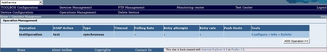

When a service is imported the operation described in the export file are immediately available in the new service. When a service is created from scratch no operations are available.
To list the available operations or to create a new operation select a service then click on the Operations management link in the second row of the toolbar (a service has to be selected in order to display this link). The browse will display a table listing the available operations.

The table displayed includes the following information: